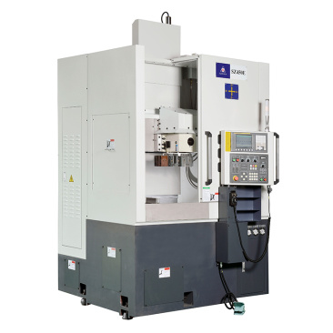

Направление 06
Вертикальные токарно-карусельные станки
Максимальная жёсткость для тяжёлых крупногабаритных деталей и дисков.

Технические возможности
Устойчивое точение больших диаметров
Вертикальная компоновка уверенно удерживает тяжёлые заготовки и упрощает загрузку. Направление подходит для дисков, колец, корпусов и деталей энергетического машиностроения.
- Жёсткий планшайбовый столСтабильная геометрия при высоких силах резания.
- Большой диаметр обработкиРабочее пространство под крупные и тяжёлые детали.
- Автоматическая смена инструментаСокращение вспомогательного времени и повторяемая обработка.
- Измерение и контрольИнтеграция щупов и автоматизированных циклов.
Нужна консультация?